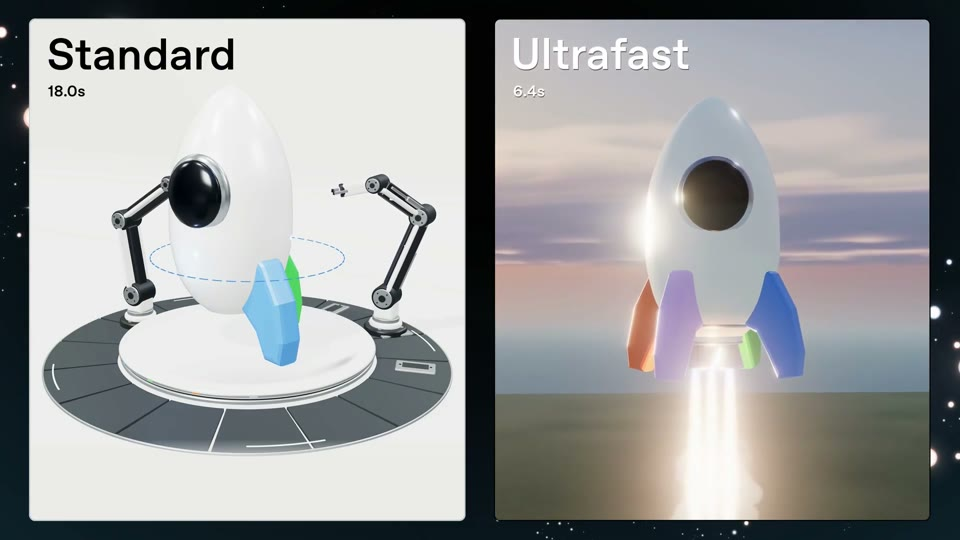
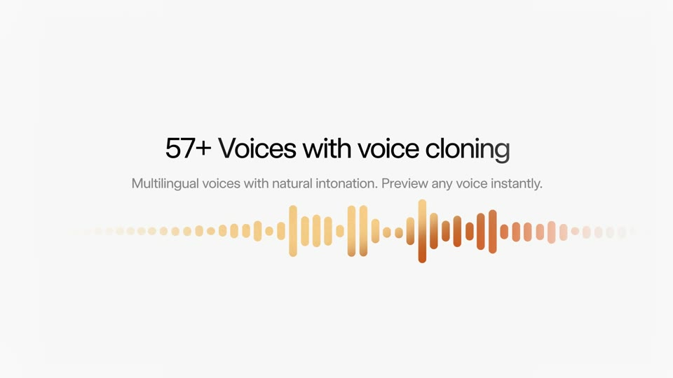
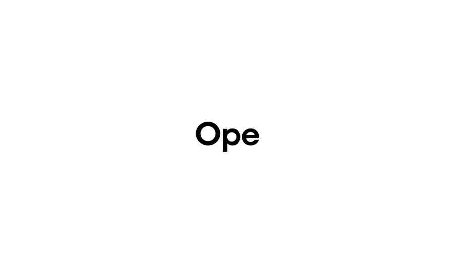

The race
Two cards, one lunch. On the left, a generic food database: search, pick “1 serving”, adjust grams, repeat. On the right, Kallo: one sentence. The right timer stops first, and its answer is closer to what you actually ate.
Colour world. The database card stays neutral grey; the Kallo card carries the brand sweep along its edge, so colour itself tells you which side wins.
The film, beat by beat

Two ways to log lunch
Two portrait cards on cream. Left: “Food database”; right: “Kallo”. Both timers at 0.0.

Left: search, pick, weigh
Left card: search “chicken thigh”, a list of 12 look-alike entries, pick “1 serving”, adjust grams; then rice; then greens. Its timer keeps running.

Right: one sentence
Right card: the composer at 2× types “rice with a grilled chicken thigh, skin removed”.

Right: done
548 kcal counts up with its macros; the right timer freezes at the real measured time.

Left: still going
The left card crops to one row, “Chicken thigh · 1 serving”, while the right card holds.

Closer to what you ate
Three cells: the sentence, its ingredients, the result. “skin removed” is the reason the number differs.

iPhone and the web
The winning card widens into the web window.

Sign-off
The wordmark backspaces into the app icon: the typing verb one last time.
How the product enters
The product is one half of the frame from the first second; the comparison makes its difference (one sentence, the detail understood) visible without a single claim.
Comparison films can read as aggressive, and the timer must be true: our analysis takes a few seconds, so the win has to be honest.
Decisions for you
What we make
Data: measure the real analysis time on dev for the sentence, and use a real database flow for the left card. Remotion: both cards; no generated imagery needed.